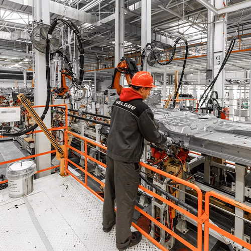
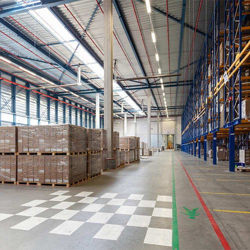

A manufacturing workspace involves a number of people, vehicles and other types of assets. Using BLE AoA technology, our RTLS Manufacturing solutions cater to the need for developing a safe, orderly and productive working environment and enhance the integration of industry and information technology
Real-time monitoring to protect workers and prevent accidents on the factory floor
Track assets and streamline workflows to keep operations running smoothly
Eliminate bottlenecks and reduce downtime with intelligent location insights

Extensive structure of hospitals is not an easy job to be taken care of. Tracking assets and staff within a healthcare environment need a proper system. Our RTLS Solution provides efficient assistance with its real-time tracking feature for staff and hospital assets.
Locate medical equipment instantly with real-time positioning, reducing search time from hours to seconds
Track high-value assets and receive instant alerts when equipment leaves designated areas
Maintain equipment condition through proactive monitoring and timely maintenance scheduling
Eliminate unnecessary rental expenses by always knowing where your available assets are located
Optimize your warehouse operations and supply chain visibility with our advanced RTLS solution. Leveraging BLE AoA technology, we deliver high-precision indoor positioning to streamline inventory movement, track assets in real-time, and enhance overall logistics efficiency.
RTLS in logistics can help management to increase efficiency, reduce costs, and improve overall supply chain management. By providing real-time asset tracking insights, RTLS provides human resources or staff to make better decisions and respond in-time to changes in demand or other factors.

Drivers often find it difficult to look for a parking spot, especially during the rush hours. Our RTLS solutions provide Bluetooth AoA technology to promote car park management by providing high-precision indoor positioning solutions which end the hassle of drivers and make parking easy and faster. It also helps with reducing fuel cost as it saves drivers from aimless searches.
Gain insights to optimize overall parking experience for the drivers but integrating RTLS parking management solutions. Experience real-time location data of vehicles within a parking facility and promote better car parking management. .
The strict and numerous structural spaces in public security systems demand an efficient and convenient solution to track staff and assets in real-time. Our RTLS solution provides law enforcement agencies with high-accuracy BLE indoor positioning technology, to keep staff and detainees safe, and to modernize and standardize the law enforcement process.
The RTLS solution’s tracking capabilities can provide real-time location data on officers, prisoners, and automobiles to better improve law enforcement, which leads to a safer and more secure environment for citizens..
In this era safety is without doubt the foremost important thing. With events happening all around the Nation, digitizing the management processes helps with efficient locating of assets and attendees. Our RTLS solution equip with AoA Bluetooth positioning guarantee the safety of audience and improves management.
RTLS tracking can provide critical and enhanced security personnel management during events by providing real-time location data. With the Bluetooth technology, event operators can enhance attendees satisfaction and cater to their diverse needs in a more efficient way.